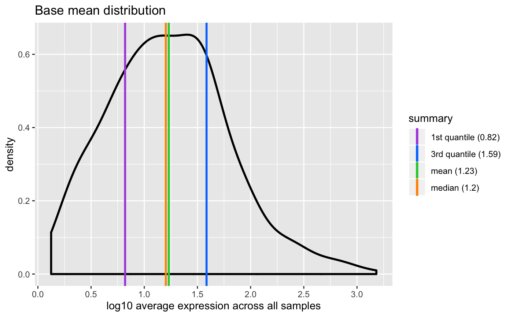

The base mean is the mean of normalized counts of all samples, normalizing for sequencing depth.
plotBaseMean(object, ...) # S4 method for numeric plotBaseMean(object, nonzero = TRUE, trans = c("log10", "log2", "identity"), summary = TRUE, color = getOption(x = "acid.color.discrete", default = acidplots::scale_color_synesthesia_d()), labels = list(title = "Base mean distribution", subtitle = NULL, x = "average expression across all samples", y = "density", color = "summary")) # S4 method for DESeqDataSet plotBaseMean(object, ...) # S4 method for DESeqResults plotBaseMean(object, ...) # S4 method for DESeqAnalysis plotBaseMean(object, ...)
| object | Object. |
|---|---|
| ... | Additional arguments. |
| nonzero |
|
| trans |
For more information: help(topic = "scale_x_continuous", package = "ggplot2") |
| summary |
|
| color |
To set the discrete color palette globally, use: options(acid.color.discrete = ggplot2::scale_color_viridis_d()) |
| labels |
|
ggplot.
DESeqDataSet: Generates row means of normalized counts.
This value corresponds to the baseMean column of DESeqResults.
Passes to numeric method.
DESeqResults: Uses baseMean column of results.
Passes to numeric method.
DESeqAnalysis: Passes to DESeqDataSet method.
Updated 2019-10-15.
https://support.bioconductor.org/p/75244/
#> #> #>#>#> #>